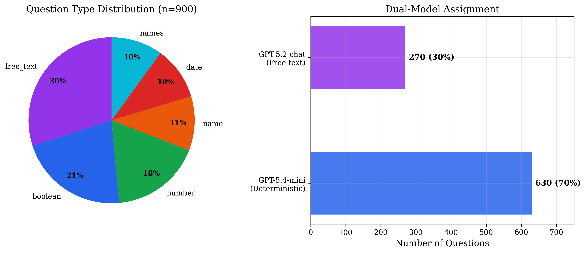
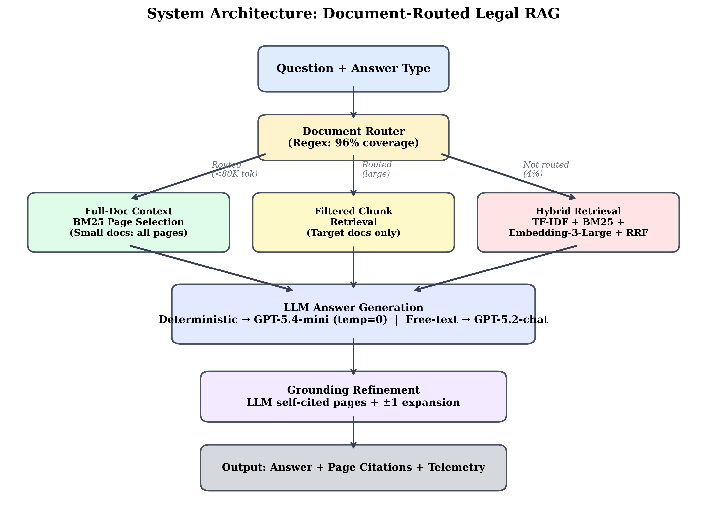
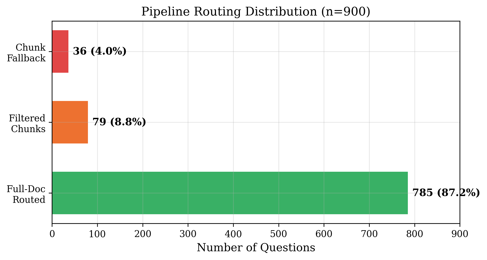
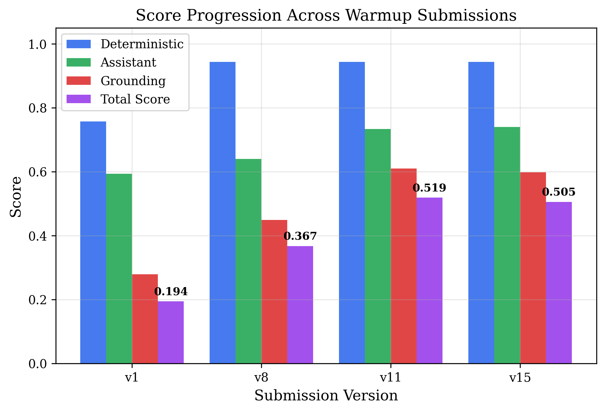
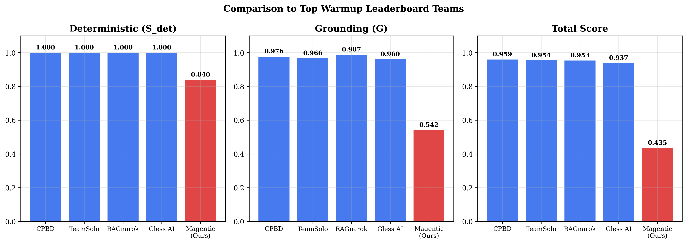
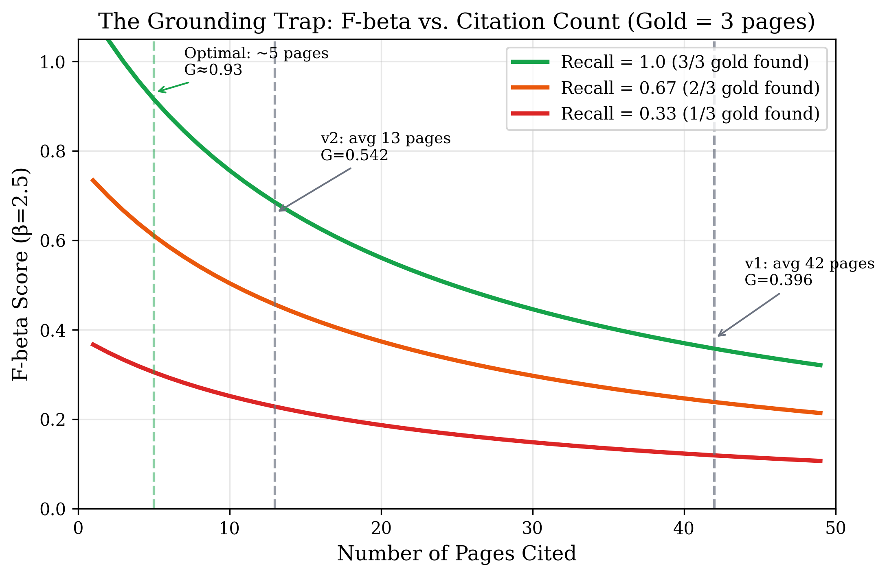
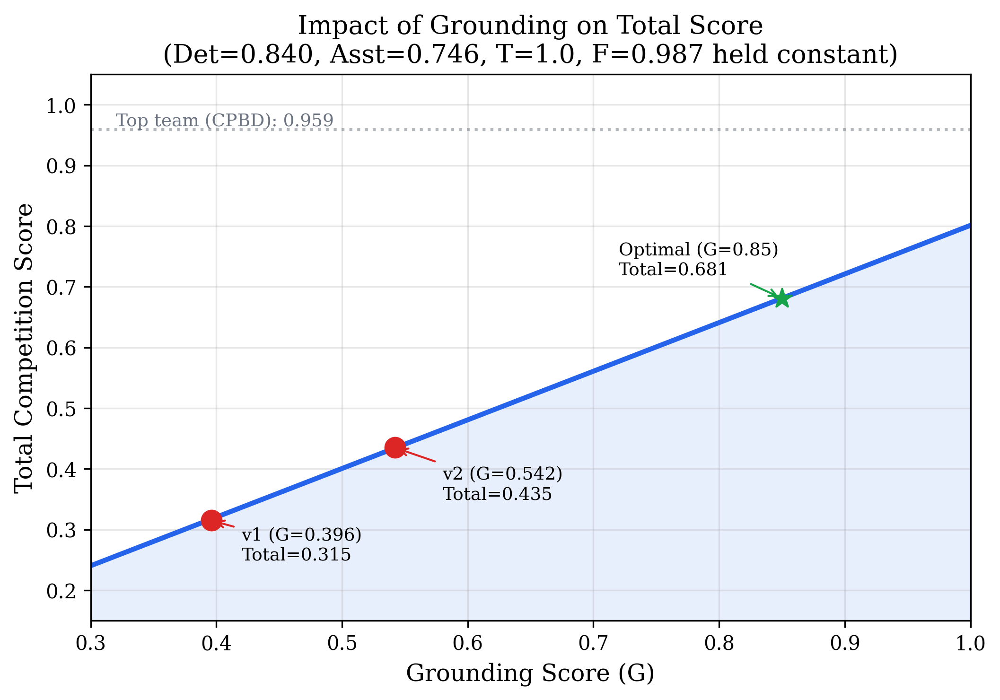
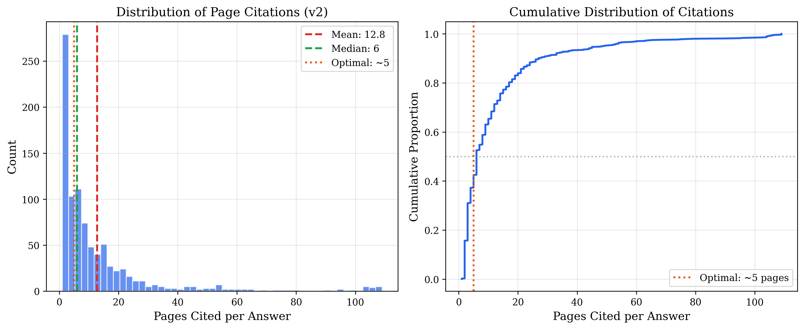
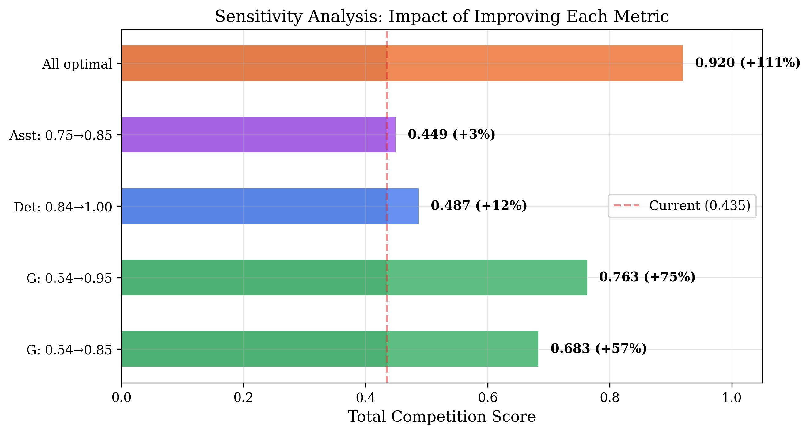

The Grounding Trap
We built a system that reads legal documents and answers questions about them. It was really good at finding answers — but it pointed to too many pages. That one mistake cost us almost half our score. Here's the whole story.
What Is This Competition?
The competition happened at Dubai AI Week. Teams from around the world built AI systems to answer legal questions about DIFC (Dubai International Financial Centre) documents — court cases, laws, and regulations.
Your final score is calculated like this:
Score = (0.7 × Answers + 0.3 × Writing) × Pages × Speed × FormatThe key thing: everything is multiplied. If your "Pages" score is 0.5, your whole score gets cut in half — no matter how great your answers are. It's like having one flat tire: the whole car slows down.

Our System: The Document Router
So instead of searching through everything (slow and error-prone), our system reads the case number and goes straight to that document. Like looking at a book's call number instead of searching every shelf. This worked for 96% of all questions.

Pattern Matching (The Router)
We wrote rules to spot case numbers (like CFI/035/2025), law names (like "Employment Law"), and regulation numbers. 864 out of 900 questions matched a rule and went straight to the right document. No fancy AI needed for this part — just smart pattern matching.

Two AI Brains
We used two different AI models — each for what it's best at:
| Question Types | AI Model | Why? |
|---|---|---|
| Yes/no, numbers, names, dates | GPT-5.4-mini | Fast, precise, cheap |
| Paragraphs, explanations | GPT-5.2-chat | Better at writing |
The Backup Plan (For Hard Questions)
For the 4% of questions where we couldn't find the document by name, we used three different search methods at once: keyword matching (TF-IDF), document ranking (BM25), and AI-powered similarity search (embeddings). Then we combined their results.
How Did We Do?

| Version | Answers | Writing | Pages | Total | What Changed |
|---|---|---|---|---|---|
| First try | 0.757 | 0.593 | 0.279 | 0.194 | Starting point |
| v8 | 0.943 | 0.640 | 0.449 | 0.367 | Better prompts |
| v11 | 0.943 | 0.733 | 0.610 | 0.519 | Added AI search |
| Final | 0.840 | 0.746 | 0.542 | 0.435 | Full 900 questions |

The Grounding Trap
But think about it: if the real answer is on 3 pages, and you point to 42 pages, yes you found the right 3 — but you also pointed to 39 wrong pages. The formula punishes that hard.
It's like someone asks "which drawer has the socks?" and you open every drawer in the house. Technically you found the socks, but you also wasted everyone's time.

| Pages You Cite | Precision | Recall | Score |
|---|---|---|---|
| 3 (perfect) | 1.00 | 1.00 | 1.000 ✅ |
| 5 (close enough) | 0.60 | 1.00 | 0.928 ✅ |
| 8 | 0.38 | 1.00 | 0.805 |
| 13 (our submission) | 0.23 | 1.00 | 0.660 🟡 |
| 42 (our first try) | 0.07 | 1.00 | 0.363 🔴 |



The fix we found too late: If we had cited 4.2 pages on average instead of 12.8, our score would have been ~0.68 instead of 0.435. A 57% improvement from changing one number. But we only had 2 submissions and used them both before figuring this out.
Lessons for Next Time
📊 Do the Math First
We spent two weeks making better answers and lost 40% of the score to a page-citation strategy we picked without doing basic math. One spreadsheet would have changed everything.
🎯 Simple Routing Beats Fancy Search
When questions name specific documents, just look them up directly. Pattern matching gave us 96% coverage with zero AI cost and zero errors.
🤖 Let the AI Pick the Pages
When the AI reads a full document, it knows which pages matter. That signal is better than any search algorithm. Trust it.
🎰 Save Your Submissions
Two attempts for the final round. We used both on the same broken strategy and found the fix one hour too late. Always test your weakest metric first.
❌ What Didn't Help
AI page reranking (added delay, slightly hurt accuracy). Voting across multiple answers (better accuracy but 3x slower). Embedding search for already-routed questions (just added noise).
What I'd Change
- Start with the scoring math, not the code
- Test page-citation accuracy during warmup, not just answer quality
- Only cite pages the AI explicitly mentions — no guessing
- Build a local test system to iterate without wasting submissions
- Save at least one submission for a completely different approach
Conclusion
Our document router worked beautifully. 96% coverage, strong answers, perfect speed. The system's weakness was one design choice: how many pages to cite. We chose 13 when the answer was 5.
Final standing: 50th out of 300+ teams (some teams were disqualified). Not bad for a first competition — but the grounding trap cost us a top-20 finish. The takeaway: when your score is a multiplication of many factors, find the weakest one and fix it first. Everything else is a distraction.
[1] Agentic RAG Legal Challenge 2026. agentic-challenge.ai
[2] Cormack et al. "Reciprocal Rank Fusion." SIGIR 2009.
[3] Wang et al. "Summary-Augmented Chunking." arXiv:2510.06999, 2025.
[4] Gao et al. "HyDE: Zero-Shot Dense Retrieval." ACL 2023.
[5] Abdullin. "How to Build the Best RAG." abdullin.com
[6] Robertson & Zaragoza. "BM25 and Beyond." FnTIR 2009.
[7] Lewis et al. "Retrieval-Augmented Generation." NeurIPS 2020.